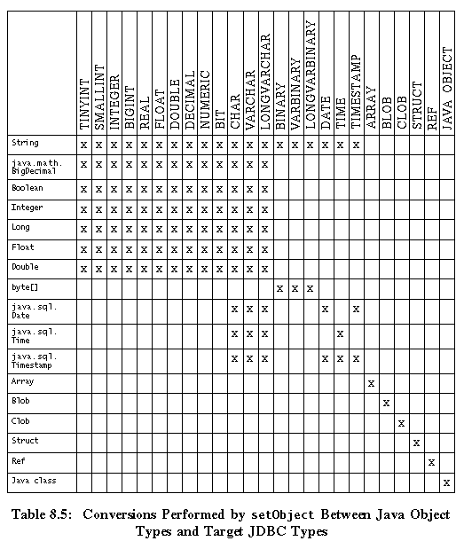
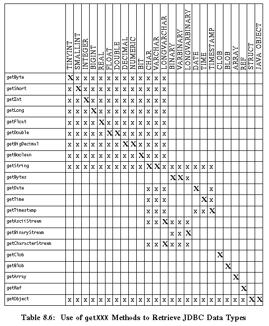
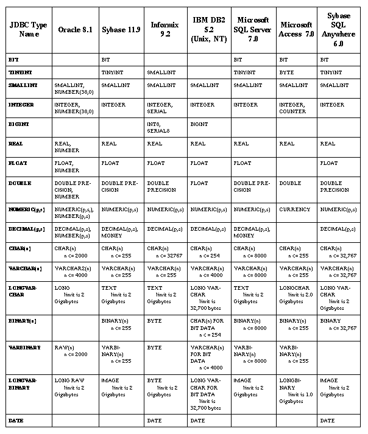
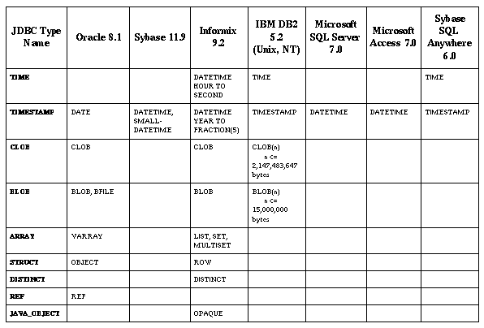

NOTE: The material in this chapter is based on JDBCtm API Tutorial and Reference, Second Edition: Universal Data Access for the Javatm 2 Platform, published by Addison Wesley as part of the Java series, ISBN 0-201-43328-1.
Because data types in SQL and data types in the Java programming language are not identical, there needs to be some mechanism for transferring data between an application using Java types and a database using SQL types. (Note that the phrase "Java types," as used in this book, stands for "types in the Java programming language.")
In order to transfer data between a database and an application written in the Java programming language, the JDBC API provides three sets of methods:
ResultSet class for retrieving SQL SELECT results as Java types
PreparedStatement class for sending Java types as SQL statement parameters
CallableStatement class for retrieving SQL OUT parameters as Java types
This section brings together information about data types affecting various classes and interfaces and puts all the tables showing the mappings between SQL types and Java types in one place for easy reference. It also describes each of the generic SQL data types, including the SQL3 types.
Unfortunately there are significant variations between the SQL types supported by different database products. Even when different databases support SQL types with the same semantics, they may give those types different names. For example, most of the major databases support an SQL data type for large binary values, but Oracle calls this type LONG RAW, Sybase calls it IMAGE, Informix calls it BYTE, and DB2 calls it LONG VARCHAR FOR BIT DATA.
Fortunately, JDBC programmers will normally not need to concern themselves with the actual SQL type names used by a target database. Most of the time JDBC programmers will be programming against existing database tables, and they need not concern themselves with the exact SQL type names that were used to create these tables.
JDBC defines a set of generic SQL type identifiers in the class java.sql.Types. These types have been designed to represent the most commonly used SQL types. In programming with the JDBC API, programmers will normally be able to use these JDBC types to reference generic SQL types, without having to be concerned about the exact SQL type name used by the target database. These JDBC types are fully described in the next section.
The one major place where programmers may need to use SQL type names is in the SQL CREATE TABLE statement when they are creating a new database table. In this case programmers must take care to use SQL type names that are supported by their target databases. The table "JDBC Types Mapped to Database-specific SQL Types" on page 111 provides some suggestions for suitable SQL type names to be used for JDBC types for some of the major databases. We recommend that you consult your database documentation if you need exact definitions of the behavior of the various SQL types on a particular database.
If you want to be able to write portable JDBC programs that can create tables on a variety of different databases, you have two main choices. First, you can restrict yourself to using only very widely accepted SQL type names such as INTEGER, NUMERIC, or VARCHAR, which are likely to work for all databases. Or second, you can use the java.sql.DatabaseMetaData.getTypeInfo method to discover which SQL types are actually supported by a given database and select a database-specific SQL type name that matches a given JDBC type.
JDBC defines a standard mapping from the JDBC database types to Java types. For example, a JDBC INTEGER is normally mapped to a Java int. This supports a simple interface for reading and writing JDBC values as simple Java types.
The Java types do not need to be exactly isomorphic to the JDBC types; they just need to be able to represent them with enough type information to correctly store and retrieve parameters and recover results from SQL statements. For example, a Java String object does not precisely match any of the JDBC CHAR types, but it gives enough type information to represent CHAR, VARCHAR, or LONGVARCHAR successfully.
This section describes the JDBC data types supported by both the JDBC 1.0 and 2.0 API. It also explains how they are related to standard SQL types and to types in the Java programming language. New JDBC data types introduced in the JDBC 2.0 core API are described in section 8.4 on page 94.
The JDBC types CHAR, VARCHAR, and LONGVARCHAR are closely related. CHAR represents a small, fixed-length character string, VARCHAR represents a small, variable-length character string, and LONGVARCHAR represents a large, variable-length character string.
The SQL CHAR type corresponding to JDBC CHAR is defined in SQL-92 and is supported by all the major databases. It takes a parameter that specifies the string length. Thus CHAR(12) defines a 12-character string. All the major databases support CHAR lengths up to at least 254 characters.
The SQL VARCHAR type corresponding to JDBC VARCHAR is defined in SQL-92 and is supported by all the major databases. It takes a parameter that specifies the maximum length of the string. Thus VARCHAR(12) defines a string whose length may be up to 12 characters. All the major databases support VARCHAR lengths up to 254 characters. When a string value is assigned to a VARCHAR variable, the database remembers the length of the assigned string and on a SELECT, it will return the exact original string.
Unfortunately there is no consistent SQL mapping for the JDBC LONGVARCHAR type. All the major databases support some kind of very large variable-length string supporting up to at least a gigabyte of data, but the SQL type names vary. See the table "JDBC Types Mapped to Database-specific SQL Types" on page 111 for some examples.
Java programmers do not need to distinguish among the three types of JDBC strings, CHAR, VARCHAR, and LONGVARCHAR. Each can be expressed as a Java String, and it is possible to read and write an SQL statement correctly without knowing the exact data type that was expected.
CHAR, VARCHAR, and LONGVARCHAR could have been mapped to either String or char[], but String is more appropriate for normal use. Also, the String class makes conversions between String and char[] easy: There is a method for converting a String object to a char[] and also a constructor for turning a char[] into a String object.
One issue that had to be addressed is how to handle fixed-length SQL strings of type CHAR(n). The answer is that JDBC drivers (or the DBMS) perform appropriate padding with spaces. Thus, when a CHAR(n) field is retrieved from the database, the driver will convert it to a Java String object of length n, which may include some padding spaces at the end. Conversely, when a String object is sent to a CHAR(n) field, the driver and/or the database will add any necessary padding spaces to the end of the string to bring it up to length n.
The method ResultSet.getString, which allocates and returns a new String object, is recommended for retrieving data from CHAR, VARCHAR, and LONGVARCHAR fields. This is suitable for retrieving normal data, but can be unwieldy if the JDBC type LONGVARCHAR is being used to store multi-megabyte strings. To handle this case, two methods in the ResultSet interface allow programmers to retrieve a LONGVARCHAR value as a Java input stream from which they can subsequently read data in whatever size chunks they prefer. These methods are getAsciiStream and getCharacterStream, which deliver the data stored in a LONGVARCHAR column as a stream of ASCII or Unicode characters. Note that the method getUnicodeStream has been deprecated.
The SQL3 CLOB data type, which is described later in this chapter, provides an alternate means of representing large amounts of character data.
The JDBC types BINARY, VARBINARY, and LONGVARBINARY are closely related. BINARY represents a small, fixed-length binary value, VARBINARY represents a small, variable-length binary value, and LONGVARBINARY represents a large, variable-length binary value.
Unfortunately, the use of these various BINARY types has not been standardized and support varies considerably among the major databases.
The SQL BINARY type corresponding to JDBC BINARY is a nonstandard SQL extension and is only implemented on some databases. It takes a parameter that specifies the number of binary bytes. Thus BINARY(12) defines a 12-byte binary type. Typically, BINARY values are limited to 254 bytes.
The SQL VARBINARY type corresponding to JDBC VARBINARY is a nonstandard SQL extension and is only implemented on some databases. It takes a parameter that specifies the maximum number of binary bytes. Thus VARBINARY(12) defines a binary type whose length may be up to 12 bytes. Typically, VARBINARY values are limited to 254 bytes. When a binary value is assigned to a VARBINARY variable, the database remembers the length of the assigned value and on a SELECT, it will return the exact original value.
Regrettably, there is no consistent SQL type name corresponding to the JDBC LONGVARBINARY type. All the major databases support some kind of very large variable length binary type supporting up to at least a gigabyte of data, but the SQL type names vary. See the table "JDBC Types Mapped to Database-specific SQL Types" on page 111 for some examples.
BINARY, VARBINARY, and LONGVARBINARY can all be expressed identically as byte arrays in the Java programming language. Since it is possible to read and write SQL statements correctly without knowing the exact BINARY data type that was expected, there is no need for programmers writing code in the Java programming language to distinguish among them.
The method recommended for retrieving BINARY and VARBINARY values is ResultSet.getBytes. If a column of type JDBC LONGVARBINARY stores a byte array that is many megabytes long, however, the method getBinaryStream is recommended. Similar to the situation with LONGVARCHAR, this method allows a programmer to retrieve a LONGVARBINARY value as a Java input stream that can be read later in smaller chunks.
The SQL3 BLOB data type, which is described later in this chapter, provides an alternate means of representing large amounts of binary data.
The JDBC type BIT represents a single bit value that can be zero or one.
SQL-92 defines an SQL BIT type. However, unlike the JDBC BIT type, this SQL-92 BIT type can be used as a parameterized type to define a fixed-length binary string. Fortunately, SQL-92 also permits the use of the simple non-parameterized BIT type to represent a single binary digit, and this usage corresponds to the JDBC BIT type. Unfortunately, the SQL-92 BIT type is only required in "full" SQL-92 and is currently supported by only a subset of the major databases. Portable code may therefore prefer to use the JDBC SMALLINT type, which is widely supported.
The recommended Java mapping for the JDBC BIT type is as a Java boolean.
The JDBC type TINYINT represents an 8-bit integer value between 0 and 255 that may be signed or unsigned.
The corresponding SQL type, TINYINT, is currently supported by only a subset of the major databases. Portable code may therefore prefer to use the JDBC SMALLINT type, which is widely supported.
The recommended Java mapping for the JDBC TINYINT type is as either a Java byte or a Java short. The 8-bit Java byte type represents a signed value from -128 to 127, so it may not always be appropriate for larger TINYINT values, whereas the 16-bit Java short will always be able to hold all TINYINT values.
The JDBC type SMALLINT represents a 16-bit signed integer value between -32768 and 32767.
The corresponding SQL type, SMALLINT, is defined in SQL-92 and is supported by all the major databases. The SQL-92 standard leaves the precision of SMALLINT up to the implementation, but in practice, all the major databases support at least 16 bits.
The recommended Java mapping for the JDBC SMALLINT type is as a Java short.
The JDBC type INTEGER represents a 32-bit signed integer value ranging between -2147483648 and 2147483647.
The corresponding SQL type, INTEGER, is defined in SQL-92 and is widely supported by all the major databases. The SQL-92 standard leaves the precision of INTEGER up to the implementation, but in practice all the major databases support at least 32 bits.
The recommended Java mapping for the INTEGER type is as a Java int.
The JDBC type BIGINT represents a 64-bit signed integer value between -9223372036854775808 and 9223372036854775807.
The corresponding SQL type BIGINT is a nonstandard extension to SQL. In practice the SQL BIGINT type is not yet currently implemented by any of the major databases, and we recommend that its use be avoided in code that is intended to be portable.
The recommended Java mapping for the BIGINT type is as a Java long.
The JDBC type REAL represents a "single precision" floating point number that supports seven digits of mantissa.
The corresponding SQL type REAL is defined in SQL-92 and is widely, though not universally, supported by the major databases. The SQL-92 standard leaves the precision of REAL up to the implementation, but in practice all the major databases supporting REAL support a mantissa precision of at least seven digits.
The recommended Java mapping for the REAL type is as a Java float.
The JDBC type DOUBLE represents a "double precision" floating point number that supports 15 digits of mantissa.
The corresponding SQL type is DOUBLE PRECISION, which is defined in SQL-92 and is widely supported by the major databases. The SQL-92 standard leaves the precision of DOUBLE PRECISION up to the implementation, but in practice all the major databases supporting DOUBLE PRECISION support a mantissa precision of at least 15 digits.
The recommended Java mapping for the DOUBLE type is as a Java double.
The JDBC type FLOAT is basically equivalent to the JDBC type DOUBLE. We provided both FLOAT and DOUBLE in a possibly misguided attempt at consistency with previous database APIs. FLOAT represents a "double precision" floating point number that supports 15 digits of mantissa.
The corresponding SQL type FLOAT is defined in SQL-92. The SQL-92 standard leaves the precision of FLOAT up to the implementation, but in practice all the major databases supporting FLOAT support a mantissa precision of at least 15 digits.
The recommended Java mapping for the FLOAT type is as a Java double. However, because of the potential confusion between the double precision SQL FLOAT and the single precision Java float, we recommend that JDBC programmers should normally use the JDBC DOUBLE type in preference to FLOAT.
The JDBC types DECIMAL and NUMERIC are very similar. They both represent fixed-precision decimal values.
ame="1007716">
The corresponding SQL types DECIMAL and NUMERIC are defined in SQL-92 and are very widely implemented. These SQL types take precision and scale parameters. The precision is the total number of decimal digits supported, and the scale is the number of decimal digits after the decimal point. For most DBMSs, the scale is less than or equal to the precision. So for example, the value "12.345" has a precision of 5 and a scale of 3, and the value ".11" has a precision of 2 and a scale of 2. JDBC requires that all DECIMAL and NUMERIC types support both a precision and a scale of at least 15.
The sole distinction between DECIMAL and NUMERIC is that the SQL-92 specification requires that NUMERIC types be represented with exactly the specified precision, whereas for DECIMAL types, it allows an implementation to add additional precision beyond that specified when the type was created. Thus a column created with type NUMERIC(12,4) will always be represented with exactly 12 digits, whereas a column created with type DECIMAL(12,4) might be represented by some larger number of digits.
The recommended Java mapping for the DECIMAL and NUMERIC types is java.math.BigDecimal. The java.math.BigDecimal type provides math operations to allow BigDecimal types to be added, subtracted, multiplied, and divided with other BigDecimal types, with integer types, and with floating point types.
The method recommended for retrieving DECIMAL and NUMERIC values is ResultSet.getBigDecimal. JDBC also allows access to these SQL types as simple Strings or arrays of char. Thus, Java programmers can use getString to receive a DECIMAL or NUMERIC result. However, this makes the common case where DECIMAL or NUMERIC are used for currency values rather awkward, since it means that application writers have to perform math on strings. It is also possible to retrieve these SQL types as any of the Java numeric types.
There are three JDBC types relating to time:
DATE type represents a date consisting of day, month, and year. The corresponding SQL DATE type is defined in SQL-92, but it is implemented by only a subset of the major databases. Some databases offer alternative SQL types that support similar semantics.
TIME type represents a time consisting of hours, minutes, and seconds. The corresponding SQL TIME type is defined in SQL-92, but it is implemented by only a subset of the major databases. As with DATE, some databases offer alternative SQL types that support similar semantics.
TIMESTAMP type represents DATE plus TIME plus a nanosecond field. The corresponding SQL TIMESTAMP type is defined in SQL-92, but it is implemented by only a very small number of databases.
Because the standard Java class java.util.Date does not match any of these three JDBC date/time types exactly (it includes both DATE and TIME information but has no nanoseconds), JDBC defines three subclasses of java.util.Date to correspond to the SQL types. They are:
java.sql.Date for SQL DATE information. The hour, minute, second, and millisecond fields of the java.util.Date base class should be set to zero. If the number of milliseconds supplied to the java.sql.Date constructor is negative, the driver will compute the date as the number of milliseconds before January 1, 1970. Otherwise, the date is computed as the specified number of milliseconds after January 1, 1970.
java.sql.Time for SQL TIME information. The year, month, and day fields of the java.util.Date base class are set to 1970, January, and 1. This is the "zero" date in the Java epoch.
java.sql.Timestamp for SQL TIMESTAMP information. This class extends java.util.Date by adding a nanoseconds field.
All three of the JDBC time-related classes are subclasses of java.util.Date, and as such, they can be used where a java.util.Date is expected. For example, internationalization methods take a java.util.Date object as an argument, so they can be passed instances of any of the JDBC time-related classes.
A JDBC Timestamp object has its parent's date and time components and also a separate nanoseconds component. If a java.sql.Timestamp object is used where a java.util.Date object is expected, the nanoseconds component is lost. However, since a java.util.Date object is stored with a precision of one millisecond, it is possible to maintain this degree of precision when converting a java.sql.Timestamp object to a java.util.Date object. This is done by converting the nanoseconds in the nanoseconds component to whole milliseconds (by dividing the number of nanoseconds by 1,000,000) and then adding the result to the java.util.Date object. Up to 999,999 nanoseconds may be lost in this conversion, but the resulting java.util.Date object will be accurate to within one millisecond.
The following code fragment is an example of converting a java.sql.Timestamp object to a java.util.Date object that is accurate to within one millisecond.
Timestamp t = new Timestamp(98724573287540L); java.util.Date d; d = new java.util.Date(t.getTime() + (t.getNanos() / 1000000));
New methods in the JDBC 2.0 core API make it possible for the driver to take a specified time zone into account when calculating a date, time, or timestamp. The time zone information is included in a java.util.Calendar object that is passed to new versions of the methods for getting and setting Date, Time, and Timestamp values. When no time zone is specified, the driver uses the time zone of the virtual machine running the application when it calculates a date, time, or timestamp.
The ISO (International Organization for Standardization) and IEC (the International Electrotechnical Commission) have defined new data types that are commonly referred to as SQL3 types. Of these new SQL3 data types, BLOB, CLOB, ARRAY, and REF are predefined types, whereas the SQL structured type and the DISTINCT type are user-defined types (UDTs). These new types, with the exception of DISTINCT, are mapped to interfaces that are new in the JDBC 2.0 core API. This section describes each data type briefly; more complete information on each type can be found in the reference chapter for the corresponding interface. There is a chapter on the DISTINCT data type, but because DISTINCT types are mapped to a built-in type, there is no separate interface for it.
The new data types in the JDBC 2.0 core API represent a significant expansion in the types of data that can be used in a relational database. In general, they are more like objects; in fact, two of the new data types are UDTs that can optionally be custom mapped to classes in the Java programming language. A third UDT (JAVA_OBJECT) is itself an instance of a class defined in the Java programming language. Despite their advanced nature, all of the new data types in the JDBC 2.0 core API can be used as conveniently as the data types in the JDBC 1.0 API. For example, they can be used as column values in database tables, and they can be retrieved and stored using the appropriate getXXX and setXXX methods.
The JDBC type BLOB represents an SQL3 BLOB (Binary Large Object).
A JDBC BLOB value is mapped to an instance of the Blob interface in the Java programming language. If a driver follows the standard implementation, a Blob object logically points to the BLOB value on the server rather than containing its binary data, greatly improving efficiency. The Blob interface provides methods for materializing the BLOB data on the client when that is desired.
The JDBC type CLOB represents the SQL3 type CLOB (Character Large Object).
A JDBC CLOB value is mapped to an instance of the Clob interface in the Java programming language. If a driver follows the standard implementation, a Clob object logically points to the CLOB value on the server rather than containing its character data, greatly improving efficiency. Two of the methods on the Clob interface materialize the data of a CLOB object on the client.
The JDBC type ARRAY represents the SQL3 type ARRAY.
An ARRAY value is mapped to an instance of the Array interface in the Java programming language. If a driver follows the standard implementation, an Array object logically points to an ARRAY value on the server rather than containing the elements of the ARRAY object, which can greatly increase efficiency. The Array interface contains methods for materializing the elements of the ARRAY object on the client in the form of either an array or a ResultSet object.
The JDBC type DISTINCTDISTINCT represents the SQL3 type DISTINCT.
The standard mapping for a DISTINCT type is to the Java type to which the base type of a DISTINCT object would be mapped. For example, a DISTINCT type based on a CHAR would be mapped to a String object, and a DISTINCT type based on an SQL INTEGER would be mapped to an int.
The DISTINCT type may optionally have a custom mapping to a class in the Java programming language. A custom mapping consists of a class that implements the interface SQLData and an entry in a java.util.Map object.
The JDBC type STRUCT represents the SQL3 structured type. An SQL structured type, which is defined by a user with a CREATE TYPE statement, consists of one or more attributes. These attributes may be any SQL data type, built-in or user-defined.
The standard mapping for the SQL type STRUCT is to a Struct object in the Java programming language. A Struct object contains a value for each attribute of the STRUCT value it represents.
A STRUCT value may optionally be custom mapped to a class in the Java programming language, and each attribute in the STRUCT may be mapped to a field in the class. A custom mapping consists of a class that implements the interface SQLData and an entry in a java.util.Map object.
The JDBC type REF represents an SQL3 type REF<structured type>. An SQL REF references (logically points to) an instance of an SQL structured type, which the REF persistently and uniquely identifies. In the Java programming language, the interface Ref represents an SQL REF.
If an application wants to point to an instance of an SQL structured type in the database rather than having its attribute values materialized on the client, it can use the type REF<structured type>, a reference to that SQL structured type.
A REF value is a unique identifier created specifically for a particular instance of an SQL structured type. It is persistently stored with the instance it references in a special table on the server. An application can select the REF value from its special table and use it in place of the structured type instance it identifies.
The JDBC type JAVA_OBJECT, added in the JDBC 2.0 core API, makes it easier to use objects in the Java programming language as values in a database. JAVA_OBJECT is simply a type code for an instance of a class defined in the Java programming language that is stored as a database object. The type JAVA_OBJECT is used by a database whose type system has been extended so that it can store Java objects directly. The JAVA_OBJECT value may be stored as a serialized Java object, or it may be stored in some vendor-specific format.
The type JAVA_OBJECT is one of the possible values for the column DATA_TYPE in the ResultSet objects returned by various DatabaseMetaData methods, including getTypeInfo, getColumns, and getUDTs. The method getUDTs, part of the new JDBC 2.0 core API, will return information about the Java objects contained in a particular schema when it is given the appropriate parameters. Having this information available facilitates using a Java class as a database type.
For DBMSs that support them, values of type JAVA_OBJECT are stored in a database table using the method PreparedStatement.setObject. They are retrieved with the methods ResultSet.getObject or CallableStatement.getObject and updated with the ResultSet.updateObject method.
For example, assuming that instances of the class Engineer are stored in the column ENGINEERS in the table PERSONNEL, the following code fragment, in which stmt is a Statement object, prints out the names of all of the engineers.
ResultSet rs = stmt.executeQuery("SELECT ENGINEERS FROM PERSONNEL");
while (rs.next()) {
Engineer eng = (Engineer)rs.getObject("ENGINEERS");
System.out.println(eng.lastName + ", " + eng.firstName);
}
After the query returns the ResultSet object rs, which contains all of the instances of Engineer, the code retrieves each instance in turn with the method getObject. The value returned by getObject is an Object type, so it must be narrowed to the more specific type Engineer before being assigned to the variable eng.
In any situation where a program written in the Java programming language retrieves data from a database, there has to be some form of mapping and data conversion. In most cases, programmers using the JDBC API will be programming with knowledge of their target database's schema. In other words, they know, for example, what tables the database contains and the data type for each column in those tables. They can therefore use the strongly typed access methods in the interfaces ResultSet, PreparedStatement, and CallableStatement. This section presents three different scenarios, describing the data mapping and conversion required in each case.
In the most common case, a user executes a simple SQL statement and gets back a ResultSet object with the results. Each value returned by the database and stored in a ResultSet column will have a JDBC data type. A call to a ResultSet.getXXX method will retrieve that value as a Java data type. For example, if a ResultSet column contains a JDBC FLOAT value, the method getDouble will retrieve that value as a Java double. Table 8.6 on page 110 shows which getXXX methods may be used to retrieve which JDBC types. (A user who does not know the type of a ResultSet column can get that information by calling the method ResultSet.getMetaData and then calling the method ResultSetMetaData.getColumnType.)
In another possible scenario, the user sends an SQL query that takes input parameters. In this case, the user calls the PreparedStatement.setXXX methods to assign a value to each input parameter. For example, PreparedStatement.setLong(1, 2345678) will assign the value 2345678 to the first parameter as a Java long. The driver will convert 2345678 to a JDBC BIGINT in order to send it to the database. Which JDBC type the driver sends to the database is determined by the standard mapping from Java types to JDBC types, shown in Table 8.2 on page 106.
In yet another scenario, a user wants to call a stored procedure, assign values to its INOUT parameters, retrieve values from a ResultSet object, and retrieve values from the parameters. This case is rather uncommon and more complicated than most, but it gives a good illustration of mapping and data conversion.
In this scenario, the first thing to do is to assign values to the INOUT parameters using PreparedStatement.setXXX methods. In addition, because the parameters will also be used for output, the programmer must register each parameter with the JDBC type of the value that the database will return to it. This is done with the method CallableStatement.registerOutParameter, which takes one of the JDBC types defined in the class Types. A programmer retrieves the values stored in the output parameters with CallableStatement.getXXX methods.
The XXX type used for CallableStatement.getXXX must map to the JDBC type registered for that parameter. For example, if the database is expected to return an output value whose type is JDBC REAL, the parameter should have been registered as java.sql.Types.REAL. Then to retrieve the JDBC REAL value, the method CallableStatement.getFloat should be called (the mapping from JDBC types to Java types is shown in Table 8.1 on page 105). The method getFloat will return the value stored in the output parameter after converting it from a JDBC REAL to a Java float. To accommodate various databases and make an application more portable, it is recommended that values be retrieved from ResultSet objects before values are retrieved from output parameters.
The following code demonstrates calling a stored procedure named getTestData, which has two parameters that are both INOUT parameters and which also returns a normal JDBC ResultSet. First the Connection object con creates the CallableStatement object cstmt. Then the method setByte sets the first parameter to 25 as a Java byte. The driver will convert 25 to a JDBC TINYINT and send it to the database. The method setBigDecimal sets the second parameter with an input value of 83.75. The driver will convert this Java BigDecimal object to a JDBC NUMERIC value. Next the two parameters are registered as OUT parameters, the first parameter as a JDBC TINYINT and the second parameter as a JDBC NUMERIC with two digits after the decimal point. After cstmt is executed, the values are retrieved from the ResultSet object using ResultSet.getXXX methods. The method getString gets the value in the first column as a Java String object, getInt gets the value in the second column as a Java int, and the second getInt retrieves the value in the third column as a Java int.
Then CallableStatement.getXXX methods retrieve the values stored in the output parameters. The method getByte retrieves the JDBC TINYINT as a Java byte, and getBigDecimal retrieves the JDBC NUMERIC as a Java BigDecimal object with two digits after the decimal point. Note that when a parameter is both an input and an output parameter, the setXXX method uses the same Java type as the getXXX method (as in setByte and getByte). The registerOutParameter method registers it to the JDBC type that is mapped from the Java type (a Java byte maps to a JDBC TINYINT, as shown in Table 8.2 on page 106).
CallableStatement cstmt = con.prepareCall(
"{call getTestData(?, ?)}");
cstmt.setByte(1, 25);
cstmt.setBigDecimal(2, 83.75);
// register the first parameter as a JDBC TINYINT and the second
// as a JDBC NUMERIC with two digits after the decimal point
cstmt.registerOutParameter(1, java.sql.Types.TINYINT);
cstmt.registerOutParameter(2, java.sql.Types.NUMERIC, 2);
ResultSet rs = cstmt.executeQuery();
// retrieve and print values in result set
while (rs.next()) {
String name = rs.getString(1);
int score = rs.getInt(2);
int percentile = rs.getInt(3);
System.out.print("name = " + name + ", score = " + score);
System.out.println(", percentile = " + percentile);
}
// retrieve values in output parameters
byte x = cstmt.getByte(1);
java.math.BigDecimal n = cstmt.getBigDecimal(2);
To generalize, the XXX in CallableStatement.getXXX and CallableStatement.setXXX methods is a Java type. For setXXX methods, the driver converts the Java type to a JDBC type before sending it to the database (using the standard mappings shown in Table 8.2 on page 106). For getXXX methods, the driver converts the JDBC type returned by the database to a Java type (using the standard mappings shown in Table 8.1 on page 105) before returning it to the getXXX method.
The method registerOutParameter always takes a JDBC type as an argument, and the method setObject may take a JDBC type as an argument.
Note that if a JDBC type is supplied in its optional third argument, the method setObject will cause an explicit conversion of the parameter value from a Java type to the JDBC type specified. If no target JDBC type is supplied to setObject, the parameter value will be converted to the JDBC type that is the standard mapping from the Java Object type (as shown in Table 8.4 on page 108). The driver will perform the explicit or implicit conversion before sending the parameter to the database.
The SQL3 user-defined types (UDTs), structured types and DISTINCT types, can be custom mapped to classes in the Java programming language. If a custom mapping has been set up, the driver will use that mapping instead of the standard mapping when it converts a UDT from a JDBC type to a Java type or vice versa.
UDTs are retrieved from the database with the methods ResultSet.getObject and CallableStatement.getObject; UDTs are sent back to the database with the method PreparedStatement.setObject. When an application calls a getObject method to retrieve a UDT, the driver will check to see if the type map associated with the connection has an entry for the UDT. If it does, the driver will use that type map to custom map the UDT; if there is no matching entry, the driver will use the standard mapping.
Almost all custom mapping is done using the connection's type map. It is possible, however, to have the driver use a different type map. The methods for which a custom mapping is possible have two versions, one that takes a type map and one that does not. The usual situation is not to supply a type map, in which case the driver uses the connection's type map by default. When a type map is supplied to a method, it supersedes the connection's type map, and the driver will use it instead of the type map associated with the connection to map a UDT. If the type map supplied has no entry for the UDT, the driver will use the standard mapping.
The setObject method does not take a type map as a parameter, so it operates a little differently. If setObject is passed an instance of a class that implements the SQLData interface, that is, an object that was custom mapped when it was retrieved, the driver will already have set up the mechanism for mapping it. The driver will convert the class instance, mapping the UDT back to its SQL type before sending it to the database. If the parameter to be set by the method setObject has not been custom mapped, the driver will use the standard mapping to convert it before sending it to the database.
The fact that only the methods getObject and setObject can be used to retrieve or store SQL structured types ensures that a custom mapping will be used if there is one. Four methods in the Array interface may be passed a type map so that if the ARRAY elements are UDTs, they can be custom mapped when the elements are materialized on the client. The Struct method getAttributes also has a version that takes a type map, which is used to custom map an SQL structured type's attributes before bringing them over to the client.
In most cases, the user wants to access results or parameters whose data types are known at compile time. However, some applications, such as generic browsers or query tools, are compiled with no knowledge of the database schema they will access. For this reason, JDBC provides support for fully dynamically typed data access in addition to static data type access.
Three methods facilitate accessing values whose data types are not known at compile time:
If, for example, an application wants to be able to accept a variety of types as results in a ResultSet object, it can use the method ResultSet.getObject.
The methods ResultSet.getObject and CallableStatement.getObject retrieve a value as a Java Object. Since Object is the base class for all Java objects, an instance of any Java class can be retrieved as an instance of Object. However, the following Java types are built-in "primitive" types and are therefore not instances of the class Object: boolean, char, byte, short, int, long, float, and double. As a result, these types cannot be retrieved by getObject methods. However, each of these primitive types has a corresponding class that serves as a wrapper. Instances of these classes are objects, which means that they can be retrieved with the methods ResultSet.getObject and CallableStatement.getObject. Table 8.3 on page 107 shows the mapping from a JDBC type to a Java Object type. This table differs from the standard mapping from JDBC type to Java type in that each primitive Java type is replaced by its wrapper class, except that JDBC TINYINT and JDBC SMALLINT are mapped to the Java class Integer.
Additions to the JDBC 2.0 core API make it easier to store Java objects in a database. The PreparedStatement.setObject method in the JDBC 1.0 API has always provided some support for persistent storage of objects defined in the Java programming language. With the new data type JAVA_OBJECT, in conjunction with the new method DatabaseMetaData.getUDTs, it is now easier to keep track of the Java objects stored in a database.
This section contains the following tables relating to JDBC and Java data types:
Table 8.1-JDBC Types Mapped to Java Types
This table shows the conceptual correspondence between JDBC types and Java types. A programmer should write code with this mapping in mind. For example, if a value in the database is aSMALLINT, ashortshould be the data type used in a JDBC application.
All CallableStatement.getXXX methods except forgetObjectuse this mapping. ThegetObjectmethods for both theCallableStatementandResultSetinterfaces use the mapping in "JDBC Types Mapped to Java Object Types" on page 107.
Table 8.2-Java Types Mapped to JDBC Types
This table shows the mapping a driver should use for the ResultSet.updateXXX methods and for IN parameters. PreparedStatement.setXXX methods and RowSet.setXXX methods use this table for mapping an IN parameter, which is a Java type, to the JDBC type that will be sent to the database. Note that the setObject methods for these two interfaces use the mapping shown in "Java Object Types Mapped to JDBC Types" on page 108.
Table 8.3-JDBC Types Mapped to Java Object Types
ResultSet.getObject and CallableStatement.getObject use the mapping shown in this table for standard mappings.
Table 8.4-Java Object Types Mapped to JDBC Types
PreparedStatement.setObject and RowSet.setObject use the mapping shown in this table when no parameter specifying a target JDBC type is provided.
Table 8.5-Conversions by setObject from Java Object Types to JDBC Types
This table shows which JDBC types may be specified as the target JDBC type to the methods PreparedStatement.setObject and RowSet.setObject.
Table 8.6-Type Conversions Supported by ResultSet.getXXX Methods
This table shows which JDBC types may be returned by ResultSet.getXXX methods. A bold X indicates the method recommended for retrieving a JDBC type. A plain x indicates for which JDBC types it is possible to use a getXXX method.
This table also shows the conversions used by the SQLInput.readXXX methods, except that they use only the recommended conversions.
Table 8.7-JDBC Types Mapped to Database-specific SQL Types
This table shows the names used by individual databases for their data types that most closely correspond to the JDBC types.
This table has two purposes. First, it illustrates the general correspondence between types in the Java programming language and the SQL types. Second, it shows the mapping used by CallableStatement.getXXX methods and SQLInput.readXXX methods. (Note that the mapping used by the CallableStatement.getObject method is shown in Table 8.3.)
This table shows the conversions used for IN parameters before they are sent to the DBMS, used by the PreparedStatement.setXXX and RowSet.setXXX methods. These same conversions are also used by ResultSet.updateXXX methods and SQLOutput.writeXXX methods. (Note that the PreparedStatement.setObject and RowSet.setObject methods use the mapping in Table 8.4.)
The mapping for String will normally be VARCHAR but will turn into LONGVARCHAR if the given value exceeds the driver's limit on VARCHAR values. The same is true for byte[], which may be mapped to either VARBINARY or LONGVARBINARY values, depending on the driver's limit on VARBINARY values. In most cases, the choice between CHAR and VARCHAR is not significant. In any case, drivers will just make the right choice. The same is true for the choice between BINARY and VARBINARY.
This table shows the mapping from JDBC types to Java object types that is used by the ResultSet.getObject and CallableStatement.getObject methods.
These are the mappings used by the PreparedStatement.setObject method when no parameter specifying a target JDBC type is given. (The JDBC types that may be specified to the PreparedStatement.setObject method are shown in Table 8.5.)
Note that the mapping for String will normally be VARCHAR but will turn into LONGVARCHAR if the given value exceeds the driver's limit on VARCHAR values. The case is similar for byte[], which will be VARBINARY or LONGVARBINARY, depending on the driver's limit for VARBINARY values.
[D]
An "x" means that the given Java object type may be converted to the given
JDBC type. This table show the possible values for the parameter specifying a
target JDBC type that is passed to the method PreparedStatement.setObject or RowSet.setObject. Note that some conversions may fail at
run time if the value presented is invalid.
[D]
SQLInput.readXXX methods support only the recommended conversions.
An "x" means that the method can retrieve the JDBC type. An "X"
means that the method is recommended for retrieving the JDBC type.
There is considerable variation among the different SQL types supported by the different databases. Table 8.7 shows the database-specific SQL types that best match the JDBC type for various major databases. The presence of a database-specific type name indicates that the given type can be used to achieve the semantics of the corresponding JDBC type, though the database-specific type may also provide additional semantics.
Notes and Lamentations:
DATE or DATETIME type
that can be used to contain either a DATE or a TIME or
both.
VARCHAR and VARCHAR2 are currently synonyms in
Oracle8.
LONGVARCHAR, DB2 also supports "CLOB(n)" with a limit
of 2 gigabytes.
LONGVARBINARY, DB2 also supports "BLOB(n)" with a limit
of 2 gigabytes.
BINARY, VARBINARY, and LONGVARBINARY literals in SQL statements varies widely among databases. We
recommend using PreparedStatement.setBytes to set values in a
portable way.
DATE, TIME, and TIMESTAMP
literals in SQL statements varies widely among databases. We recommend using the
JDBC SQL escape syntax for dates and times (see "SQL Escape Syntax in Statements" on page 36) to set Date, Time, and Timestamp values in a portable way.
[D]
